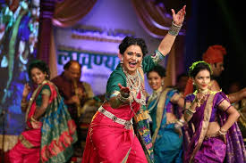

Exploring India's Culture and Heritage
Classical Dance Forms of India
Lavani is a traditional folk dance of Maharashtra, known for its powerful rhythm, expressive gestures, and energetic performance style. The word "Lavani" is derived from the Marathi word "lavanya," meaning beauty, which reflects the graceful and alluring nature of this dance form. Performed mainly by women, Lavani combines dance, music, and drama, and is famous for its bold and captivating storytelling.
Lavani is a traditional folk dance of Maharashtra, known for its powerful rhythm, expressive gestures, and energetic performance style. The word "Lavani" is derived from the Marathi word "lavanya," meaning beauty, which reflects the graceful and alluring nature of this dance form. Performed mainly by women, Lavani combines dance, music, and drama, and is famous for its bold and captivating storytelling.
Lavani dates back to the 17th and 18th centuries, during the rule of the Maratha Empire. It gained popularity as a form of entertainment for soldiers who returned from battle, helping them relax and revive their spirits. Lavani was also used as a medium of communication, conveying political messages, historical tales, and social satire. Over time, it evolved into a more structured and dramatic art form, especially when combined with Tamasha, a folk theatre form of Maharashtra. Despite being seen as bold or controversial in some eras, Lavani has always held a place of pride in Maharashtrian culture.
Today, Lavani continues to thrive in folk festivals, theatre performances, and film industries, especially in Marathi cinema. It is taught in dance academies and celebrated as a symbol of Marathi identity. Though some modern versions are adapted for entertainment purposes, traditional Lavani still maintains its cultural depth and artistic value. It serves as a bridge between folk traditions and modern performance arts, empowering women performers and keeping alive the vibrant spirit of Maharashtra's rural heritage.
Lavani is known for its wide range of themes, which can be romantic, social, political, or devotional. Some performances are sensual and playful, while others convey social commentary, reflecting on issues like poverty, gender roles, and love. There are two main types of Lavani: Nirguni Lavani: Focused on spiritual and philosophical themes, often praising God or questioning life. Shringarik Lavani: Revolves around romantic and erotic themes, usually performed in a dramatic or theatrical style.